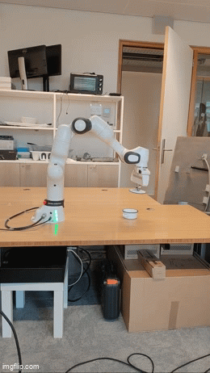

Master Thesis

My Software Engineering master's thesis is titled "Re-Engineering a Robotic Imiatation Learning Pipeline and Integrating a VLM as the Reward System." This project's stack includes Python, Docker, Ray, ROS, Tkinter, and Bash. It is about creating an easy-to-use pipeline for reinforcement learning on the Franka Research 3 arm. It includes clear, easy to follow documentation and instructions for future user of the program to easily perform theit own experiments. It includes updated demonstration collection scripts, refined data processing pipelines, realigned software layouts, simple and consistent Docker containers, easy task creation, and quick experiment setup.
The thesis also involves integrating a new way of scoring task completion: Robometer. Robometer is a VLM-based piece of software that takes in a (partial) task and judges how well it was completed. This can allow for complex tasks to be judged with ease. Integration of this software took lots of learning of new topics, such as HPC network communication, VLMs, and deeper ROS knowledge. In order to integrate this well and ensure the pipeline was the best it could be, I conduced many experiments. These experiments helped me use a data-driven approach to finding the best combination of configurations for the lab's particular setup, so that the needs of the end-users could be met well.
While much of the time was spent working on the thesis-related software, I spent lots of time getting familiar with the robot and how it works, as there was little documentation from previous users, many broken scripts, and unusable files. I collaborated with a co-worker to fix up the system and get the robotic arm running again consistently. I also optimized manual control of the robot by building a TKinter GUI for easy use of basic robotic functions, cutting down repetitive tasks time and making access to certain functions much simpler.